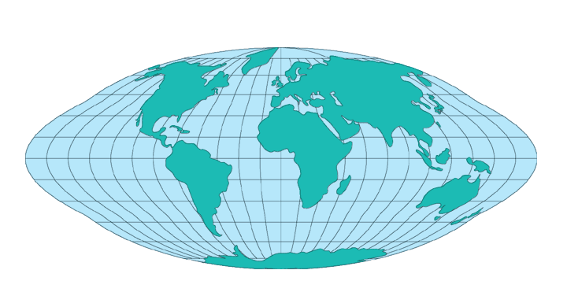
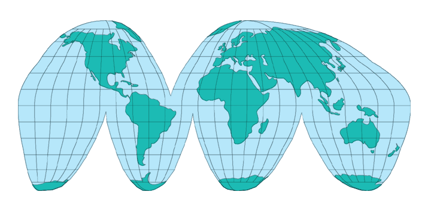
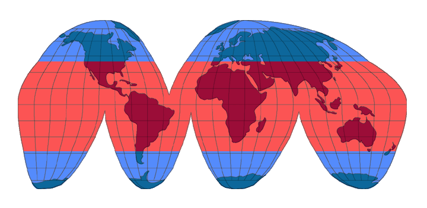

Uninterrupted Goode Homolosine
Usage


Usage:*
Similar to the
Sinusoidal projection, areas are
preserved and there is no distortion along the Equator and central
meridian, but, in the Sinusoidal,
distortion becomes pronounced near the outer meridians, especially in the
polar regions. The Goode Homosline projection was developed to compensate
for these distortions by selecting multiple central meridians. The Goode
Homosline projection combines a portion of the
Sinusoidal (from 40 N. to 40 S.) with portions of the
Mollweide (for all areas outside 40 N.
to 40 S.). The following diagram shows where the portions of the
interupted Sinusoidal (in
RED) and the
Mollweide (in BLUE) projections are
combined to form the Interupted Goode Homolosine projection.

* Usage information source:
Snyder, John P. Map Projections - A Working Manual Paper U.S. Geological
Survey Professional Paper 1395. Washington: United States Government
Printing Office, 1987.
Back to DSS Main Page